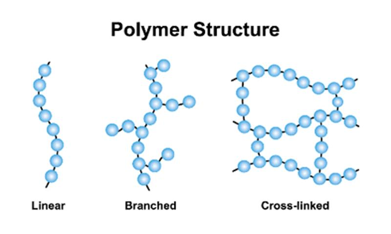

โครงสร้างและสมบัติของพอลิเมอร์
โครงสร้างของพอลิเมอร์ขึ้นอยู่กับการเรียงตัวและการเชื่อมต่อของหน่วยมอนอเมอร์ ซึ่งส่งผลโดยตรงต่อสมบัติทางกายภาพและการใช้งาน โดยโครงสร้างพื้นฐานที่สำคัญ ได้แก่ โครงสร้างแบบเส้น โครงสร้างแบบกิ่ง และโครงสร้างแบบร่างแห โครงสร้างแบบเส้น (Linear Polymer) เป็นพอลิเมอร์ที่มอนอเมอร์เชื่อมต่อกันเป็นสายโซ่ยาวต่อเนื่อง ไม่มีแขนงยื่นออกจากสายโซ่หลัก ตัวอย่างเช่น พอลิเอทิลีนความหนาแน่นสูง (HDPE) โครงสร้างลักษณะนี้ช่วยให้สายโซ่เรียงตัวได้ดีและมักมีความแข็งแรงค่อนข้างสูง ส่วนโครงสร้างแบบกิ่ง (Branched Polymer) เป็นพอลิเมอร์ที่มีสายโซ่หลักและมีสายโซ่ย่อยหรือกิ่งแยกออกจากสายโซ่หลัก การมีกิ่งส่งผลต่อการจัดเรียงตัวของโมเลกุล ความหนาแน่น และความยืดหยุ่นของวัสดุ ตัวอย่างเช่น พอลิเอทิลีนความหนาแน่นต่ำ (LDPE) และโครงสร้างแบบร่างแห (Cross-linked หรือ Network Polymer) เป็นพอลิเมอร์ที่สายโซ่หลายสายเชื่อมต่อกันด้วยพันธะเคมีจนเกิดเป็นโครงสร้างสามมิติ มีความแข็งแรงและทนต่อการเปลี่ยนรูปได้ดี พอลิเมอร์ประเภทนี้บางชนิดไม่สามารถหลอมเหลวและขึ้นรูปใหม่ได้ง่ายเหมือนพอลิเมอร์แบบเส้น พอลิเมอร์มีสมบัติแตกต่างกันตามชนิดของมอนอเมอร์ โครงสร้างโมเลกุล และแรงยึดเหนี่ยวระหว่างสายโซ่ สมบัติที่สำคัญ ได้แก่ ความแข็งแรง ความเหนียว ความยืดหยุ่น ความทนทานต่อความร้อน ความสามารถในการขึ้นรูป และความทนต่อสารเคมี ตัวอย่างเช่น ยางมีความยืดหยุ่นสูงจึงเหมาะสำหรับผลิตยางรถยนต์และวัสดุยืดหยุ่น ส่วนพลาสติกบางชนิดมีความแข็งแรงและทนทาน จึงเหมาะสำหรับผลิตภาชนะหรือชิ้นส่วนอุปกรณ์ต่างๆ